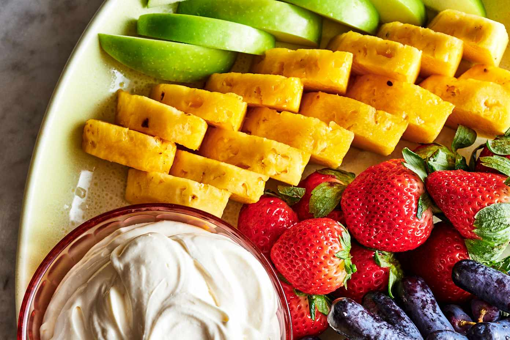

Ingredients:
- 8 ounces cream cheese (softened)
- 1 (7-ounce) jar marshmallow creme
- 1 tablespoon frozen orange juice concentrate (optional)
- 1 teaspoon vanilla extract
- 1/4 teaspoon kosher salt
- Fresh fruit, for serving
Instructions:
- Place the cream cheese in a bowl of a stand mixer (or large bowl if using a hand mixer). Let it sit until it reaches room temperature.
- Add the marshmallow creme, orange juice concentrate (if using), vanilla extract, and kosher salt.
- Mix on medium speed with the paddle attachment until smooth, about 1 minute.
- Transfer to a serving bowl and serve with fresh fruit for dipping.
Go to Homepage